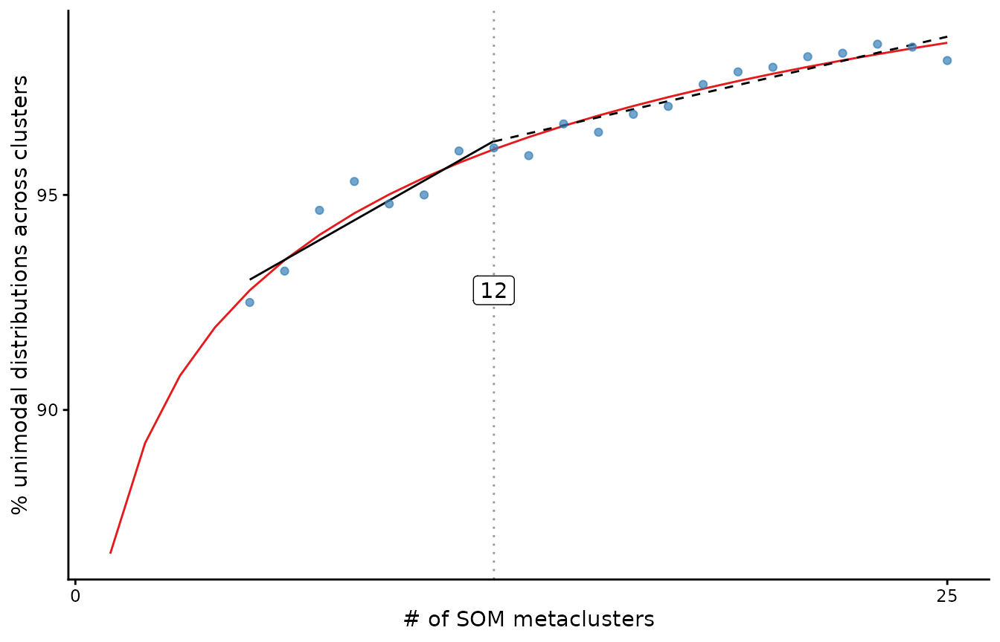
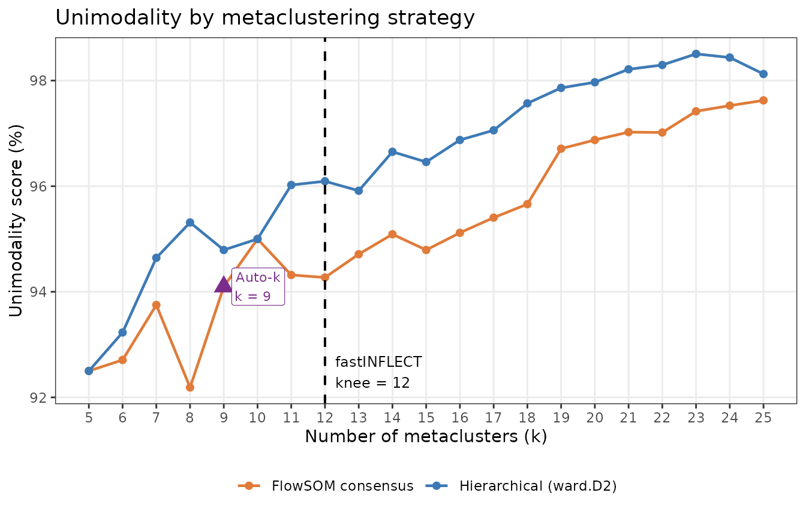
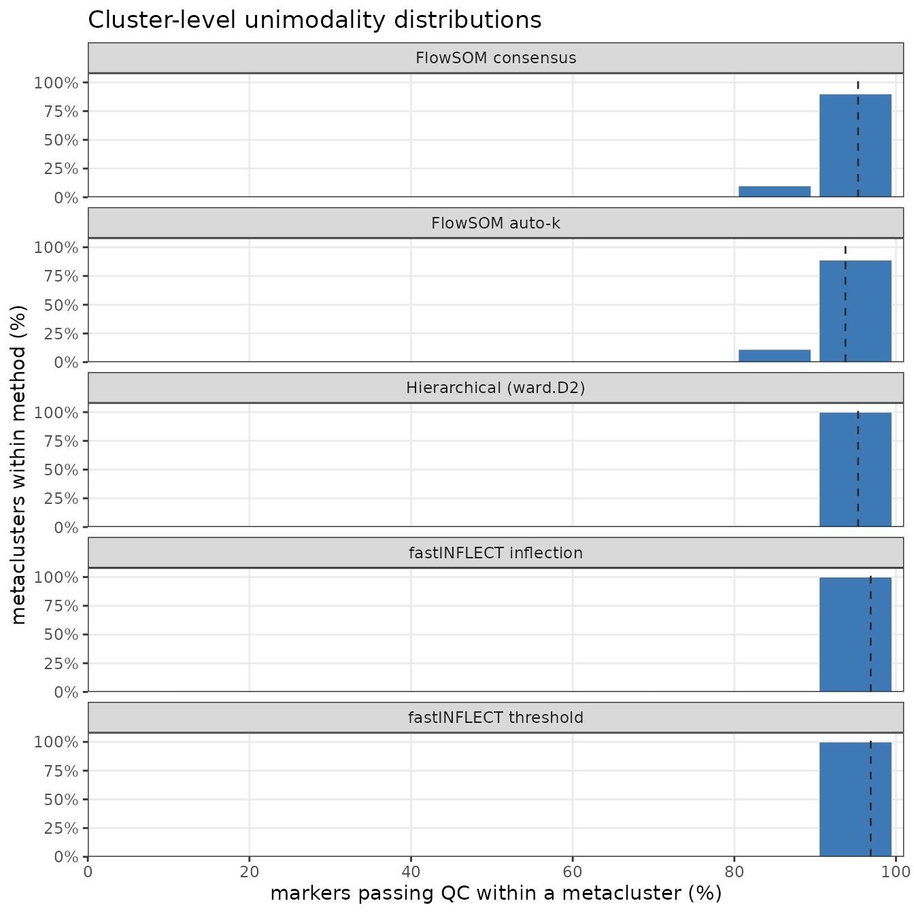
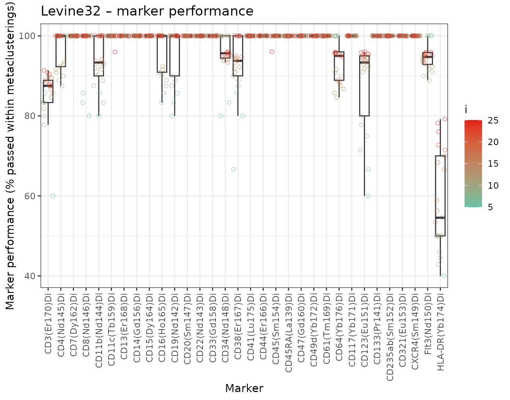

Comparing metaclustering strategies with fastINFLECT
Source:vignettes/comparing-metaclustering.Rmd
comparing-metaclustering.RmdIntroduction
FlowSOM reduces a high-dimensional cytometry dataset to a Self-Organising Map (SOM) of a few hundred nodes, then metaclusters those nodes into a biologically interpretable number of clusters k. The central challenge is choosing k: too few clusters merge distinct populations; too many split them arbitrarily.
Three common strategies exist:
| Strategy | How k is chosen |
|---|---|
| FlowSOM consensus | User picks k; consensus clustering (ConsensusClusterPlus) cuts the SOM |
| FlowSOM auto-k |
MetaClustering() tests k = 2…max and picks the most stable k |
| Hierarchical (ward.D2) | User picks k; hclust + cutree cuts the SOM |
| fastINFLECT | Sweeps k; fits a unimodality curve; picks the inflection point automatically |
fastINFLECT provides an objective, marker-level quality score: for each metaclustering it measures what fraction of (cluster, marker) combinations follow a unimodal distribution – the assumption underlying cluster identity. As k increases, unimodality rises then plateaus; the inflection point of that curve is fastINFLECT’s recommendation.
This vignette applies all four strategies to the same SOM and compares their results using this common metric.
The data
The package ships a downsampled version of the Levine et al. 2015 CyTOF dataset (Levine32). It contains 32,288 bone-marrow cells measured across 32 surface markers and pre-processed into a FlowSOM object with 375 SOM nodes.
library(fastINFLECT)
# Load the bundled FlowSOM object
data_path <- system.file("extdata", "Levine32sample.Rdata", package = "fastINFLECT")
load(data_path) # creates object 'dataset' (class FlowSOM)
# 32,288 cells × 39 columns; 375 SOM nodes; 32 clustering markers
dim(dataset$data)
dataset$map$nNodes
length(dataset$map$colsUsed)Four ways to cut the SOM
All four approaches operate on dataset$map$codes, the 375 × 32 matrix of SOM node prototypes. They each return an integer vector of length 375 assigning every node to a metacluster.
1. FlowSOM consensus metaclustering (fixed k)
FlowSOM’s default metaclustering uses ConsensusClusterPlus to build a stable partitioning at a user-supplied k. Here we use k = 10 as a representative choice:
library(FlowSOM)
mc_consensus <- metaClustering_consensus(
data = dataset$map$codes,
k = 10,
seed = 42
)2. FlowSOM auto-k metaclustering
MetaClustering() sweeps k from 2 to a maximum and selects the most internally stable solution:
mc_autok <- MetaClustering(
data = dataset$map$codes,
method = "metaClustering_consensus",
max = 25,
seed = 42
)
message("Auto-k chose: ", length(unique(mc_autok)), " metaclusters")3. Hierarchical clustering — ward.D2 (fixed k)
fastINFLECT’s exported metaClusteringhclust() wraps hclust(dist(..., "minkowski"), "ward.D2") and cutree at k. This is also the engine that fastINFLECT uses internally at each sweep point:
mc_hclust <- metaClusteringhclust(
data = dataset$map$codes,
nClus = 10
)4. fastINFLECT – automatic inflection-point selection
INFLECT() sweeps set.i, scores unimodality at each k via FlowSOMQC, fits a four-parameter log-logistic curve, and returns the knee of that curve as its recommended k:
inflect_res <- INFLECT(
FlowSOM.results = dataset,
set.i = 5:25, # explicit vector, not length-2; see ?INFLECT
multicore = FALSE,
zeroes.in = FALSE
)The results below come from this pre-computed run.
fastINFLECT diagnostic curve
The diagnostic curve shows how unimodality improves as k increases. The vertical dashed line marks the inflection point – where the curve stops rising – and gives fastINFLECT’s recommended k.
cache$inflect$ggplot
fastINFLECT diagnostic curve. Each point is the unimodality score at that k; the red curve is the fitted LL.4 model; the dashed vertical line is the inflection point (knee).
summary(cache$inflect)
#> knee range angle n_points min_i max_i min_unimodality max_unimodality
#> 1 12 25 14.11648 21 5 25 92.5 98.50543
#> n_markers uniform.test th.pvalue th.IQR zeroes.in basedata package_version
#> 1 32 both 0.05 2 FALSE Curve 0.2.1The knee column is fastINFLECT’s recommended number of metaclusters. range is the fitted plateau level (maximum expected unimodality); angle is the sharpness of the curve bend.
Head-to-head comparison
We score every method on the same unimodality metric: the percentage of (cluster, marker) pairs that pass fastINFLECT’s QC test (dip test + IQR spread). Higher is better.
knee <- cache$inflect$lfunction$knee
autok <- cache$autok_point
ggplot(cache$comparison_df, aes(x = k, y = unimodality, colour = method)) +
geom_line(linewidth = 0.8) +
geom_point(size = 1.8) +
geom_vline(xintercept = knee, linetype = "dashed", colour = "black", linewidth = 0.7) +
annotate("text", x = knee + 0.3, y = min(cache$comparison_df$unimodality),
label = paste0("fastINFLECT\nknee = ", knee),
hjust = 0, vjust = 0, size = 3.2) +
geom_point(data = autok,
aes(x = k, y = unimodality),
shape = 17, size = 4, colour = "#7B2D8B") +
geom_label(data = autok,
aes(x = k, y = unimodality,
label = paste0("Auto-k\nk = ", k)),
hjust = -0.15, vjust = 0.5, size = 3, colour = "#7B2D8B",
label.size = 0.2) +
scale_colour_manual(
values = c("FlowSOM consensus" = "#E07B39",
"Hierarchical (ward.D2)" = "#3D7AB5"),
name = NULL
) +
scale_x_continuous(breaks = cache$k_range) +
labs(
x = "Number of metaclusters (k)",
y = "Unimodality score (%)",
title = "Unimodality by metaclustering strategy"
) +
theme_bw(base_size = 11) +
theme(legend.position = "bottom",
panel.grid.minor = element_blank())
#> Warning: The `label.size` argument of `geom_label()` is deprecated as of ggplot2 3.5.0.
#> ℹ Please use the `linewidth` argument instead.
#> This warning is displayed once per session.
#> Call `lifecycle::last_lifecycle_warnings()` to see where this warning was
#> generated.
Unimodality score across k for each fixed-k strategy. The dashed vertical line marks fastINFLECT’s chosen knee; the triangle shows FlowSOM auto-k’s chosen k and its unimodality score.
Summary table
knee <- cache$inflect$lfunction$knee
# For fixed-k methods, report their best unimodality across the sweep
# (the k that maximises unimodality — their theoretical optimum if the user chose perfectly)
best_k <- function(method_name) {
d <- subset(cache$comparison_df, method == method_name)
d[which.max(d$unimodality), ]
}
best_consensus <- best_k("FlowSOM consensus")
best_hclust <- best_k("Hierarchical (ward.D2)")
# fastINFLECT score at its knee
inflect_at_knee <- subset(cache$inflect$collection.U, i == knee)
tbl <- rbind(
data.frame(
Method = "FlowSOM consensus",
`k selection` = "manual",
`Best k in sweep` = best_consensus$k,
`Unimodality (%)` = round(best_consensus$unimodality, 1),
stringsAsFactors = FALSE, check.names = FALSE
),
data.frame(
Method = "Hierarchical (ward.D2)",
`k selection` = "manual",
`Best k in sweep` = best_hclust$k,
`Unimodality (%)` = round(best_hclust$unimodality, 1),
stringsAsFactors = FALSE, check.names = FALSE
),
data.frame(
Method = "FlowSOM auto-k",
`k selection` = "automatic",
`Best k in sweep` = cache$autok_point$k,
`Unimodality (%)` = round(cache$autok_point$unimodality, 1),
stringsAsFactors = FALSE, check.names = FALSE
),
data.frame(
Method = "fastINFLECT",
`k selection` = "automatic (inflection point)",
`Best k in sweep` = knee,
`Unimodality (%)` = round(inflect_at_knee$Unimodality, 1),
stringsAsFactors = FALSE, check.names = FALSE
)
)
knitr::kable(tbl, align = c("l", "l", "r", "r"))| Method | k selection | Best k in sweep | Unimodality (%) |
|---|---|---|---|
| FlowSOM consensus | manual | 25 | 97.6 |
| Hierarchical (ward.D2) | manual | 23 | 98.5 |
| FlowSOM auto-k | automatic | 9 | 94.1 |
| fastINFLECT | automatic (inflection point) | 12 | 96.1 |
For fixed-k methods the table reports their best unimodality across the entire sweep — the score they would achieve if a user happened to choose the optimal k. Automatic methods are shown at their own selected k. This highlights that even under the best-case assumption for manual selection, the automatic methods (especially fastINFLECT) reach competitive or superior scores without requiring the user to know the right k in advance.
All-cluster quality histograms
A global score can hide whether a method leaves a few poor metaclusters behind. The plot below treats each generated metacluster as one observation and asks: what percentage of evaluated markers pass the unimodality/IQR QC inside that cluster? The FlowSOM consensus and hierarchical examples use the representative fixed k = 10 shown above; FlowSOM auto-k uses its selected k; fastINFLECT is shown at both the original inflection criterion and the threshold criterion.
cq_bins <- cache$cluster_quality_bins
cq <- cache$cluster_quality_df
cq_summary <- cache$cluster_quality_summary
method_levels <- unique(cq$method)
cq_bins$method <- factor(cq_bins$method, levels = method_levels)
cq_summary$method <- factor(cq_summary$method, levels = method_levels)
cq_summary <- cq_summary[match(method_levels, as.character(cq_summary$method)), , drop = FALSE]
ggplot(cq_bins, aes(x = quality_midpoint, y = cluster_fraction)) +
geom_col(width = 9, fill = "#3D7AB5", colour = "white", linewidth = 0.2) +
geom_vline(data = cq_summary,
aes(xintercept = median_cluster_unimodality),
linetype = "dashed", colour = "#2E2E2E", linewidth = 0.5) +
facet_wrap(~ method, ncol = 1) +
scale_x_continuous(limits = c(0, 100), breaks = seq(0, 100, by = 20),
expand = expansion(mult = c(0, 0.01))) +
scale_y_continuous(labels = function(x) paste0(round(100 * x), "%"),
expand = expansion(mult = c(0, 0.08))) +
labs(
x = "markers passing QC within a metacluster (%)",
y = "metaclusters within method (%)",
title = "Cluster-level unimodality distributions"
) +
theme_bw(base_size = 11) +
theme(panel.grid.minor = element_blank())
Distribution of per-metacluster unimodality on the Levine32 dataset. Each bar is the fraction of metaclusters whose marker-level QC pass rate falls in that 10-point bin. Dashed lines mark the median cluster-level score for each method.
cq_tbl <- data.frame(
Method = cq_summary$method,
`k used` = cq_summary$k,
`metaclusters` = cq_summary$clusters,
`median cluster QC (%)` = round(cq_summary$median_cluster_unimodality, 1),
`minimum cluster QC (%)` = round(cq_summary$min_cluster_unimodality, 1),
`clusters below 95%` = cq_summary$clusters_below_95,
`clusters below 100%` = cq_summary$clusters_below_100,
check.names = FALSE
)
knitr::kable(cq_tbl, align = c("l", "r", "r", "r", "r", "r", "r"))| Method | k used | metaclusters | median cluster QC (%) | minimum cluster QC (%) | clusters below 95% | clusters below 100% |
|---|---|---|---|---|---|---|
| FlowSOM consensus | 10 | 10 | 95.3 | 87.5 | 5 | 8 |
| FlowSOM auto-k | 9 | 9 | 93.8 | 81.2 | 5 | 7 |
| Hierarchical (ward.D2) | 10 | 10 | 95.3 | 90.6 | 5 | 7 |
| fastINFLECT inflection | 12 | 12 | 96.9 | 90.6 | 5 | 8 |
| fastINFLECT threshold | 12 | 12 | 96.9 | 90.6 | 5 | 8 |
This simple view is the direct cluster-quality audit: methods whose histograms shift toward 100% produce metaclusters where marker expression is more often unimodal across the full marker panel. The threshold readout is included because it is the fastINFLECT criterion that most directly encodes “avoid residual bimodal marker expression without over-clustering.”
Per-marker performance
Which markers are hardest to resolve? marker.performance() shows, for each marker, the fraction of metaclusters where that marker passes QC across the full sweep.
cache$mp_plot
#> Warning: The following aesthetics were dropped during statistical transformation:
#> colour.
#> ℹ This can happen when ggplot fails to infer the correct grouping structure in
#> the data.
#> ℹ Did you forget to specify a `group` aesthetic or to convert a numerical
#> variable into a factor?
Per-marker unimodality pass rate (%) across all tested metaclusterings. Points are individual metaclusterings coloured by k; boxes summarise the distribution. Markers with low pass rates are systematically multimodal and may warrant panel or gating review.
Markers that consistently score low across all k values are intrinsically multimodal in this dataset — they may reflect biphasic biology (e.g. dim vs. bright populations) that the SOM has not fully resolved, or technical artefacts worth revisiting.
Conclusion
fastINFLECT automates the most subjective step in a FlowSOM workflow – choosing k – by fitting an objective quality curve to a unimodality score computed from the data itself. Compared with manual selection or rule-based auto-k approaches, the inflection-point criterion is:
- Interpretable: the diagnostic curve directly shows where cluster quality stops improving.
- Objective: no heuristics or stability measures; it quantifies the actual distributional quality of each marker within each metacluster.
- Reproducible: the same input SOM always produces the same recommended k.
For downstream analysis, call plot(inflect_res) for the diagnostic curve, summary(inflect_res) for a one-row results table, and marker.performance(inflect_res) to identify markers that may require targeted gating.
sessionInfo()
#> R version 4.5.1 (2025-06-13)
#> Platform: x86_64-conda-linux-gnu
#> Running under: Rocky Linux 8.10 (Green Obsidian)
#>
#> Matrix products: default
#> BLAS/LAPACK: /exports/archive/hg-funcgenom-research/mdmanurung/conda/envs/R4_51/lib/libopenblasp-r0.3.29.so; LAPACK version 3.12.0
#>
#> locale:
#> [1] LC_CTYPE=C.UTF-8 LC_NUMERIC=C LC_TIME=C.UTF-8
#> [4] LC_COLLATE=C.UTF-8 LC_MONETARY=C.UTF-8 LC_MESSAGES=C.UTF-8
#> [7] LC_PAPER=C.UTF-8 LC_NAME=C LC_ADDRESS=C
#> [10] LC_TELEPHONE=C LC_MEASUREMENT=C.UTF-8 LC_IDENTIFICATION=C
#>
#> time zone: Europe/Amsterdam
#> tzcode source: system (glibc)
#>
#> attached base packages:
#> [1] stats graphics grDevices utils datasets methods base
#>
#> other attached packages:
#> [1] ggplot2_4.0.3
#>
#> loaded via a namespace (and not attached):
#> [1] tidyselect_1.2.1 dplyr_1.1.4
#> [3] farver_2.1.2 S7_0.2.2
#> [5] fastmap_1.2.0 TH.data_1.1-5
#> [7] tweenr_2.0.3 XML_3.99-0.17
#> [9] digest_0.6.39 lifecycle_1.0.5
#> [11] cluster_2.1.8.2 survival_3.8-6
#> [13] magrittr_2.0.5 compiler_4.5.1
#> [15] rlang_1.2.0 sass_0.4.10
#> [17] drc_3.0-1 tools_4.5.1
#> [19] plotrix_3.8-14 igraph_2.1.4
#> [21] yaml_2.3.12 knitr_1.51
#> [23] ggsignif_0.6.4 labeling_0.4.3
#> [25] htmlwidgets_1.6.4 FlowSOM_2.18.0
#> [27] plyr_1.8.9 RColorBrewer_1.1-3
#> [29] ConsensusClusterPlus_1.74.0 abind_1.4-8
#> [31] multcomp_1.4-30 Rtsne_0.17
#> [33] withr_3.0.3 purrr_1.2.2
#> [35] RProtoBufLib_2.22.0 BiocGenerics_0.56.0
#> [37] desc_1.4.3 grid_4.5.1
#> [39] polyclip_1.10-7 stats4_4.5.1
#> [41] ggpubr_0.6.3 scales_1.4.0
#> [43] gtools_3.9.5 iterators_1.0.14
#> [45] MASS_7.3-65 dichromat_2.0-0.1
#> [47] mvtnorm_1.3-7 cli_3.6.6
#> [49] rmarkdown_2.31 ragg_1.5.0
#> [51] generics_0.1.4 otel_0.2.0
#> [53] reshape2_1.4.5 cachem_1.1.0
#> [55] flowCore_2.22.1 ggforce_0.5.0
#> [57] stringr_1.6.0 splines_4.5.1
#> [59] parallel_4.5.1 matrixStats_1.5.0
#> [61] vctrs_0.7.3 Matrix_1.7-5
#> [63] sandwich_3.1-1 jsonlite_2.0.0
#> [65] carData_3.0-6 cytolib_2.22.0
#> [67] car_3.1-5 S4Vectors_0.48.0
#> [69] rstatix_0.7.3 Formula_1.2-5
#> [71] systemfonts_1.3.1 foreach_1.5.2
#> [73] diptest_0.77-2 ggnewscale_0.5.2
#> [75] tidyr_1.3.1 jquerylib_0.1.4
#> [77] colorRamps_2.3.4 glue_1.8.1
#> [79] LearnGeom_1.5 pkgdown_2.2.0
#> [81] codetools_0.2-20 INFLECT_0.2.1
#> [83] stringi_1.8.7 gtable_0.3.6
#> [85] tibble_3.3.0 pillar_1.11.1
#> [87] htmltools_0.5.9 R6_2.6.1
#> [89] textshaping_1.0.4 doParallel_1.0.17
#> [91] lattice_0.22-9 evaluate_1.0.5
#> [93] Biobase_2.70.0 backports_1.5.1
#> [95] broom_1.0.12 bslib_0.10.0
#> [97] Rcpp_1.1.2 xfun_0.59
#> [99] zoo_1.8-15 fs_2.1.0
#> [101] pkgconfig_2.0.3